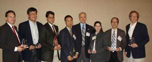

More than 400 SSL technology leaders from industry, research organizations, universities, national laboratories, manufacturing, energy efficiency organizations, utilities and municipalities gathered in San Francisco, CA to participate in the "Transformations in Lighting" Solid-State Lighting Workshop on February 3-5, 2009. The workshop, hosted by DOE, with sponsors BetaLED, Echelon, Pacific Gas & Electric, and Southern California Edison, was the sixth annual DOE meeting to accelerate SSL technology advances and guide market introduction of quality SSL products. The workshop brought together a diverse gathering of participants - from the R&D community to lighting designers and architects - to share insights, ideas, and updates on the rapidly evolving SSL market.
DOE SSL Portfolio Manager James Brodrick kicked off Day 1 by congratulating companies that are getting it right, highlighting the 2008 SSL Lighting For Tomorrow design competition winners: Cree LED Lighting Solutions, Kichler Lighting, and Luximo. Brodrick updated the audience on the Oakland GATEWAY street lighting demonstration project, noting the efficacy and cost improvements achieved between Phase II and Phase III. He stated that we are headed in the right direction, yet challenged the group to solve technology barriers to market acceptance.
Jeff Quinlan from Acuity Brands Lighting followed with a keynote talk that emphasized the importance of understanding the environment and perceptions in a given lighting application, adding that quantity and color of light impacts perception. Quinlan explained how color is quantified using the Color Rendering Index (CRI), and how ENERGY STAR®, the Lighting FactsTM. label, and the LM-79 and LM-80 test procedures create a common language for defining quality products. Quinlan encouraged attendees to drive value for the customer by using application level efficacy, lowering total cost of ownership, and by considering SSL part of a "green" solution.
Navigating the SSL Technology Learning Curve
Next, a panel of speakers addressed the challenges of navigating the SSL learning curve. Bruce Kinzey of Pacific Northwest National Laboratory (PNNL) first examined several installations from the DOE GATEWAY demonstration program, noting that "everyone is going through the same learning experience right now." Kinzey emphasized it is important to carefully match the right product to each application, and stated that "actual performance relies on a number of factors, including thermal management, thoughtful design, and quality components and construction."
Mary Matteson Bryan of Pacific Gas & Electric (PG&E) shared a utility perspective from a current streetlight demonstration project nearby in a San Francisco neighborhood. PG&E evaluated four different LED streetlights installed on four adjacent city streets, and learned the importance of matching performance to the task. Matteson Bryan encouraged the audience to "install test luminaires-seeing is believing." She noted that while performance is improving and costs are coming down, variable product quality remains a challenge for incentive programs.
Eric Haugaard of Beta LED followed with insights on how a manufacturer can gain value from demonstrations, and how lessons learned in Oakland, CA guided BetaLED to re-engineer the product to reduce costs. As part of this, BetaLED addressed the question, "What LED drive current provides the best economic value?" Ultimately, the company designed new optics specifically for street light performance using a lean design. Haugaard recommended that actual measured performance be used side by side for a fair comparison, and noted that "any good comparison must be done at the application level" using certified LM-79 photometric testing and LM-80 life data testing for the system.
Kevin Dowling of Philips Color Kinetics then presented a unique residential lighting installation on North Dumpling Island, located off the coast of Connecticut. Island owner and inventor Dean Kamen wanted to take the island entirely off grid, installing power generation, storage and management, as well as alternative consumption choices, from clean water to LED-based lighting. The result is a mix of residential LEDs, from cove lighting and surface mount downlights to a Par 38 replacement product that started in a DOE R&D project.
Studies Address SSL Patents, Environmental Impacts
Kenneth L. Simons and Susan Walsh Sanderson of Rensselaer Polytechnic Institute next shared results of a recently completed study analyzing patents filed and acquired in SSL projects internationally. The study revealed that SSL R&D is spreading further in Asia, indicating a growing Chinese role, especially in narrowly-defined SSL areas. International interdependence is common, with traditional lighting firms transitioning into SSL through joint ventures and acquisitions. While certain firms dominate, small firms still have major opportunities in materials, devices, and fixtures.
Scott Matthews and Deanna Matthews of Carnegie Mellon University followed with an update on the DOE SSL Life Cycle Analysis study, aimed at examining energy and environmental aspects related to the manufacture, use, and disposal of SSL systems. Much like the life cycle of a generic US family sedan, the use phase is by far the greatest for a generic SSL product. Matthews stated that "for the same lumen-hours of light, bulb life is less important than efficacy." Thus far, the study has focused on chip materials and production phases, and will next improve on the preliminary data, expand boundaries, and acquire data for luminaire production and SSL end-of-life.
Day 1 closed with a tour of two San Francisco outdoor LED lighting installations. Led by John Sofranac and Mary Matteson Bryan of Pacific Gas and Electric, attendees first visited a nearby PG&E commercial building, where street lighting is controlled by a remote mobile device. Attendees then visited the Sunset District to compare the residential streets described in the panel discussion assessed as part of the GATEWAY Demonstrations.
Defining Quality SSL Products
Day 2 began with a panel discussion on defining quality SSL products. Richard Karney, DOE ENERGY STAR® Program Manager, announced the first DOE ENERGY STAR® SSL products, and program plans for future expansion as LED technology continues to advance and improve. Several new lighting applications were recently added to the program, and draft criteria for replacement lamps have been released for public comment.
Next, Mia Paget of PNNL presented how the CALiPER program identifies quality through product testing. Seven rounds of testing reveal an upward trend in efficacy of tested products. However, the range from best to worst luminaire efficacy remains wide. Round 7 products tested include outdoor fixtures (streetlights and bollards), downlights, and directional and omni-directional replacement lamps. Paget cautioned attendees to watch for color variations, and to always compare performance at the luminaire level using absolute photometry, noting that product literature is often erroneous or misleading.
Fred Welsh of Radcliffe Advisors then described the DOE SSL Quality Advocates, a new voluntary pledge program to assure that LED lighting product performance is represented consistently and accurately. SSL Quality Advocates pledge to use a Lighting Facts label, similar to a food nutrition label, to document the performance of products they manufacture, sell, distribute, or promote, based on industry standard LM-79 testing.
Brodrick concluded the session with an update on the L Prize Competition, a race for super-efficient, high quality replacement lamps. Brodrick encouraged manufacturers to participate, noting that winning products will have opportunities for immediate recognition and volume sales through partnering utilities and energy efficiency organizations, which now represent the potential to reach more than 100 million customers from coast to coast.
DOE Funded R&D Update
James Brodrick began the next session with an overview of the DOE SSL R&D portfolio budget and areas of focus, with recognition for project teams making significant contributions in 2008. Awardees then gave presentations on their achievements.
-
Christian Wetzel discussed how Rensselaer Polytechnic Institute is closing the "green gap" in LED materials.
-
Yuan-Sheng Tyan described Eastman Kodak Company's research to optimize OLED architecture for maximum efficiency and color quality.
-
Anant Setlur offered an overview of General Electric Global Research efforts using advanced phosphor systems for warm, efficient LEDs.
-
Franky So presented the University of Florida's research to achieve record efficiency with blue OLEDs with charge balance.
-
Monica Hansen discussed how Cree, Inc. is demonstrating the next wave of LED chips and packaging improvements.
-
Mike Hack described how Universal Display Corporation is pushing the envelope for white OLED efficiencies.
-
Kevin Dowling reviewed Philips Color Kinetics successes with improving the efficacy and performance of an integrated LED luminaire.
A Wednesday evening Poster Session/Reception featured all current DOE funded SSL R&D projects, and provided attendees with additional opportunities for discussion, information exchange, and potential partnering. The 2009 Project Portfolio (PDF 1.0 MB) provides more on each of the current DOE SSL projects.
Participants Provide Input on DOE R&D Priorities
On Wednesday afternoon and Thursday, workshop participants divided into breakout sessions to review and prioritize R&D tasks in the DOE SSL R&D Multi-Year Program Plan (MYPP). The input from these breakout sessions will be used to update the MYPP and guide DOE planning for R&D solicitations.
What Architects & Designers Want from SSL
Avraham Mor of Lightswitch Architectural kicked off Day 3 with insights on the challenges of specifying today's LED lighting products. Mor noted that LED system parts are different than existing technologies and present unique design challenges, and encouraged manufacturers to consider how the lamp can be changed in time. While lighting designers want to have innovative solutions to offer clients, Mor advised a thorough comparison using test data, and noted that data sheets often compare poorly with actual performance.
Recognizing Quality in the Marketplace
Ruth Taylor of PNNL presented two lighting design competitions that spotlight product manufacturers who are "getting it right" with commercial and residential luminaires. Next Generation Luminaires is a new commercial luminaire design competition sponsored by DOE, the International Association of Lighting Designers, and Illuminating Engineering Society of North America. Taylor shared insights from judging, noting a large volume of submissions, which included 30% linear LEDs and 25% downlights. The judges were pleased to see some true maintenance innovation and mostly efficacious products in this inaugural year. Winners will be announced at the 2009 Strategies in Light conference.
Then Taylor discussed Lighting for Tomorrow, a residential lighting design competition sponsored by DOE, the American Lighting Association, and the Consortium for Energy Efficiency, and introduced the 2008 SSL winners.
-
Jeff Dross represented Kichler Lighting, winner with the Design Pro Series Undercabinet System. Dross described how the company often known for "pretty" lighting solutions turned to LEDs to address customer needs. The benefits of LEDs pushed Kichler to add more LED products.
-
Tim O'Sullivan of Cree LED Lighting Solutions explained Cree's integrated systems approach for the LR 4 downlight, and urged others to look for delivered lumens. He noted that Lighting for Tomorrow has provided credibility, exposure and motivation for the Cree team as they create and refine SSL products for market.
-
Frank Shum of Luximo described how the 2007 desk lamp winner of the Lighting For Tomorrow competition inspired his small start-up company to create the winning Cylindrium Desk/Task Light. Shum stated that "Lighting is about lumens, but design is important and together they form an experience."
Brodrick concluded the three-day workshop by thanking participants for taking an active role in the event, and invited them to take advantage of the many opportunities to partner and participate with DOE, and shape the future of lighting in the U.S. For ongoing updates on DOE SSL activities and events, register for SSL Updates at http://www.ssl.energy.gov.